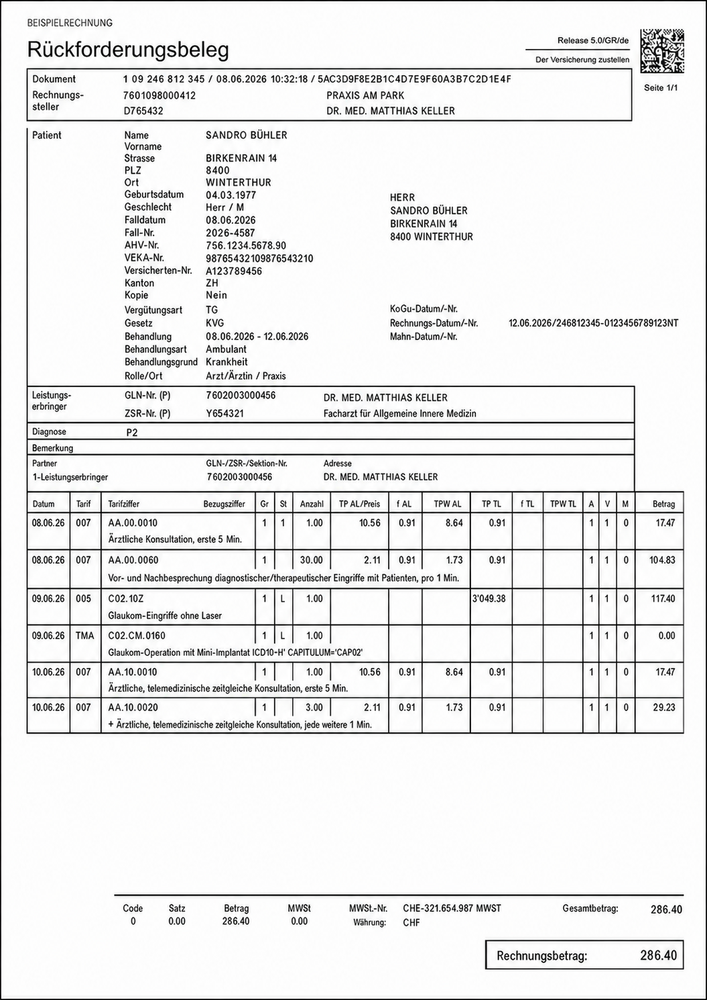

Vollständig
Erkennt dokumentierte Leistungen, die im Rechnungsentwurf fehlen könnten.
Kein kreatives Codieren. Keine erfundenen Leistungen.ClearDoc prüft Ihre Rechnungen mit einer speziell für die Schweizer Tariflogik trainierten KI. Lokal auf Ihrem Rechner. Nachvollziehbar bis auf die einzelne Position.
Seit 1. Januar 2026 gelten neue Tarifziffern, Limitationen und ambulante Pauschalen. ClearDoc übersetzt diese Logik bei jeder lokalen Rechnungsprüfung in konkrete Hinweise.
ClearDoc verbindet die klinische Dokumentation mit dem Rechnungsentwurf und der aktuell gültigen Tariflogik. Die Praxis entscheidet. Die KI begründet.
Erkennt dokumentierte Leistungen, die im Rechnungsentwurf fehlen könnten.
Kein kreatives Codieren. Keine erfundenen Leistungen.Zeigt zu jedem Hinweis die Dokumentationsstelle, Tarifziffer und angewandte Regel.
Die letzte Entscheidung bleibt immer beim Menschen.Die spezialisierte KI läuft lokal in der kontrollierten Umgebung Ihrer Praxis.
Patientendaten verlassen den Praxisrechner nicht.ClearDoc gleicht Rechnungsentwurf, dokumentierte Leistungen und – wo relevant – verlässliche Zeitdaten aus Praxissoftware, Telefonie oder Zeiterfassung lokal mit TARDOC ab. Ohne Beleg kein Vorschlag.

möglicherweise zusätzlich verrechenbares Volumen pro Jahr.
Beispielrechnung, keine Garantie. 6'800 Rechnungen pro Jahr sind eine gerundete Annahme; CHF 155 basiert auf einem BAG-Referenzwert. Der Prozentsatz ist frei anpassbar. Rechnungsstruktur nach der öffentlichen Ärztekasse-Lesehilfe.
Das spezialisierte Sprachmodell läuft in der Infrastruktur Ihrer Praxis. Dokumentation und Rechnungsdaten werden lokal analysiert, lokal protokolliert und lokal freigegeben.
Keine Übermittlung klinischer Inhalte an externe Modellanbieter.
Patientendaten werden nicht zum Training allgemeiner Modelle verwendet.
Für DSG, Arztgeheimnis und kontrollierbare Zugriffsrechte konzipiert.
Wir suchen erste Arztpraxen, die ClearDoc im sicheren Schattenbetrieb mit echten Arbeitsabläufen validieren möchten.
Faktenbasis: TARDOC und ambulante Pauschalen gelten seit 1. Januar 2026. Für die Rechnungsstellung ist der XML-Standard 5.0 erforderlich.